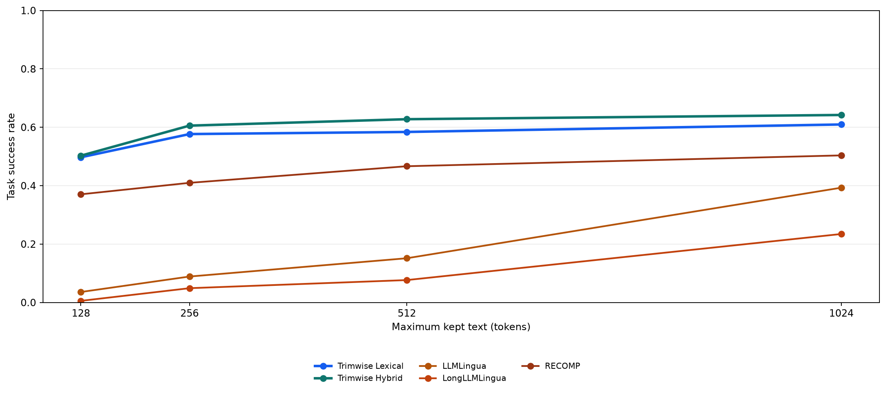
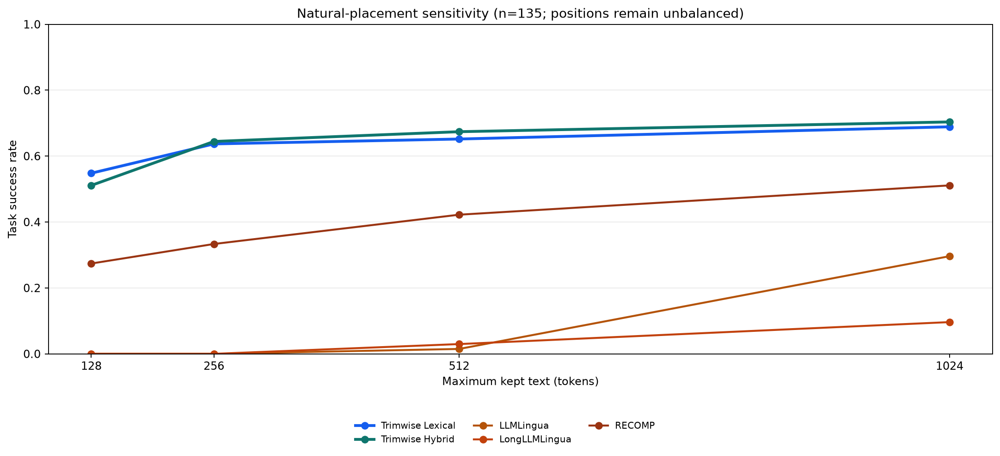
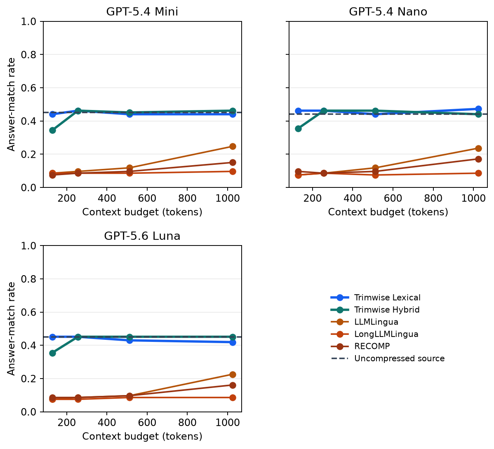
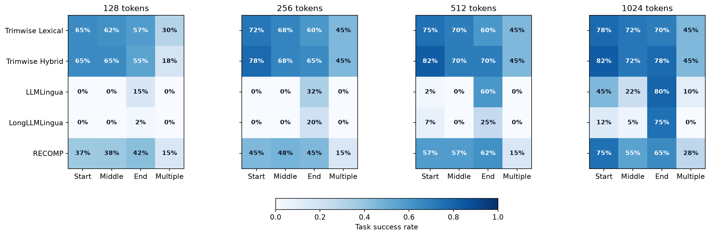
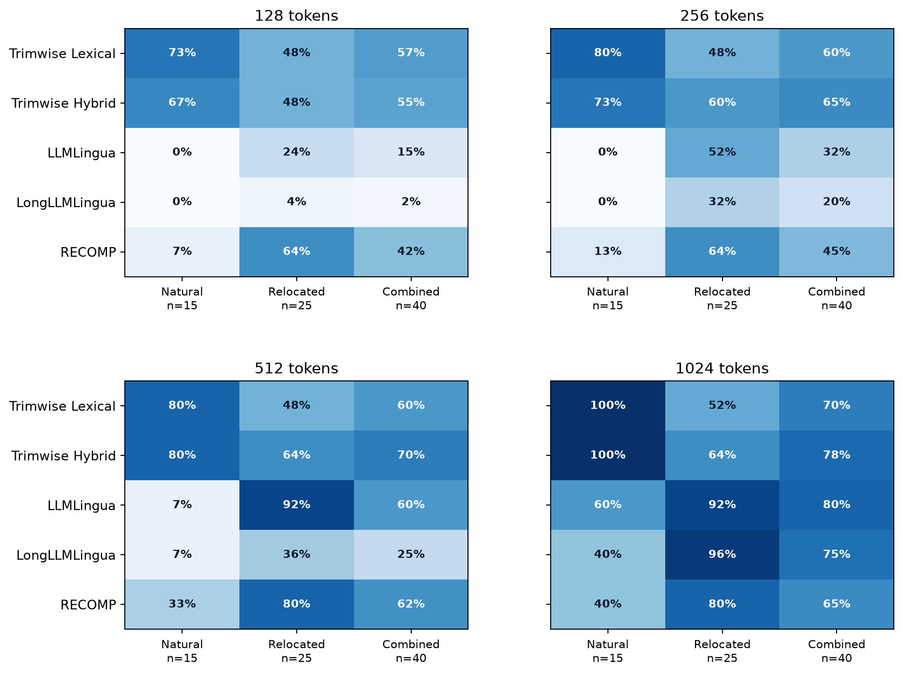
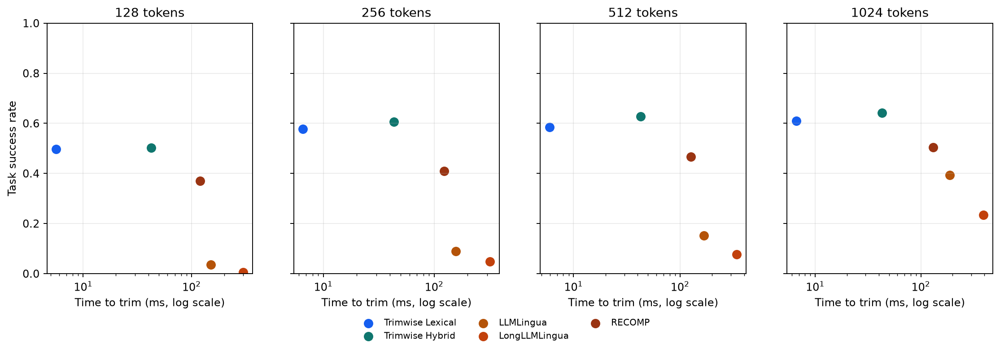
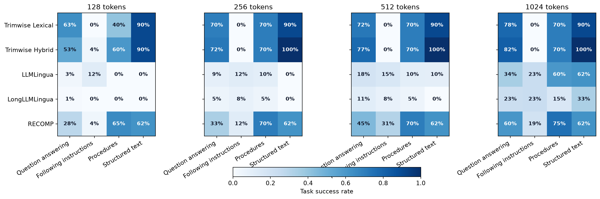

POSITION-CONTROLLED EVALUATION SUITE
Context selection with a question
Every method receives the same source and question. These results show how well each one keeps the source material needed for the task.
The original 250-case corpus remains unchanged; the separate 160-case evaluation contains 135 natural cases and 25 controlled relocations. The end-position figures report natural end (n=15), relocated end (n=25), and the combined controlled end stratum (n=40).
- Information available
- Source and question
- Maximum kept text
- 128, 256, 512, 1024 tokens
- Methods shown
- Trimwise Lexical, Trimwise Hybrid, LLMLingua, LongLLMLingua, RECOMP
- Where needed text appears
- Beginning · middle · end · several places
Results






Completion and resource use
A useful method must finish and stay within the requested limit.
| Method | Completed | Over the limit | 95th-percentile time | Typical GPU memory | Highest GPU temperature | Cooling pause |
|---|---|---|---|---|---|---|
| Trimwise Lexical | 100.0% | 0.0% | 7.2 ms | 395 MB | 58 °C | 0.0 s |
| Trimwise Hybrid | 100.0% | 0.0% | 46.2 ms | 395 MB | 48 °C | 0.0 s |
| LLMLingua | 100.0% | 31.8% | 175.7 ms | 1710 MB | 67 °C | 0.0 s |
| LongLLMLingua | 100.0% | 60.6% | 356.6 ms | 1380 MB | 72 °C | 92.7 s |
| RECOMP | 100.0% | 0.0% | 138.4 ms | 534 MB | 71 °C | 24.7 s |
How scores are calculated
See metric definitions. The underlying summary data is available in the supplied CSV file.